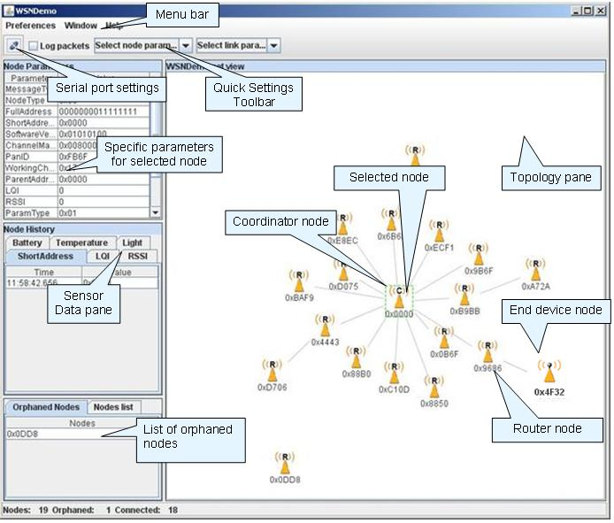

The WSNDemo application demonstrates wireless sensor network (WSN) organization and sensor data collection from network devices on the central coordinator node. WSNMonitor GUI application can be used on the PC to display the network topology and sensor data in an easy-to-interpret graphical form.
Same firmware is used by all nodes with device type defined by DIP-switches configuration as shown below:
| DIP switches | Role | ||
| 1 | 2 | 3 | |
| ON | OFF | OFF | Coordinator |
| OFF | ON | OFF | Router |
| OFF | OFF | ON | End device |
Network start procedure is initiated automatically after device power up. Coordinator organizes the wireless network according to settings in configuration file while router and end device nodes try to join the network with specified parameters. Red LED is periodically blinking with 500ms interval when device is joining the network and is ON if it is in the network. Once device enters the network red LED stops blinking and becomes constantly ON while node is in the network and awake.
Upon network join each node starts with period APP_TIMER_SENDING_PERIOD sending data packets containing node informationa and sensor measurements to coordinator. Wireless transmission is indicated by flashing green LED The coordinator receives data frames (indicated by yellow LED) and forwards them to PC via USART interface. It also periodically sends own sensor data directly to the serial port.
To observe WSN activities graphically WSN Monitor GUI application should be started on the PC the coordinator is connected to.
In order to use standard security mechanism described in ZigBee specification, WSNDemo shall be compiled with properly configured security-related parameters.
| APP_TIMER_SENDING_PERIOD | Time interval used for periodic sensor data transmissions. |
| APP_THRESHOLD_FAILED_TRANSMISSION | Number of failed transmissions after which node leaves the network. |
| CS_CHANNEL_MASK | Specifies channel mask to be used for network operation. |
| CS_CHANNEL_PAGE | Specifies channel page to be used on SubGHz frequency band. |
| CS_END_DEVICE_SLEEP_PERIOD | Periodic end device sleep interval (ms). Should be the same on parent and children nodes. |
| CS_EXT_PANID | Specifies network's extended PANID. Should be unique in given location. |
| CS_NWK_ADDR | Specifies node's short address. Can be used only with CS_NWK_UNIQUE_ADDR set to true. |
| CS_NWK_UNIQUE_ADDR | Specifies nodes' short address assignment mechanism. 1 corresponds to static (predefined) addressing and 0 to stochastic (random) address assignment. |
| CS_UID | Extended address for platforms where it is not available via special UID chip or external EEPROM. If used CS_UID shall be added to CS_PARAMS list in application Makefile. |
| APP_DEVICE_TYPE | Specifies device type for platforms without DIP-switches. |
Description of parameters common for all applications can be found in Sample Applications overview. ConfigServer parameters are described in documentation of ConfigServer.h file.
The source codes of WSNDemo application are located at
WSN Monitor is a PC-based GUI diagnostic application for WSNDemo
that is used to display the network topology and other information about the network.
Run WSNMonitorSetup.exe
located at
WSN Monitor displays the network topology in real time and updates it automatically as the nodes join or leave. The nodes are represented by icons with the node data tips. The links between the nodes are tipped with the link quality data. Sensor data for each node is recorded and may be visualized in graphical and table formats.
On WSN Monitor startup proper communication port should be selected using serial port settings button in toolbar menu. Other program menus and toolbars can be used to control the node and topology outlook.
A typical WSN Monitor screen is shown in the figure below.

1.5.1-p1